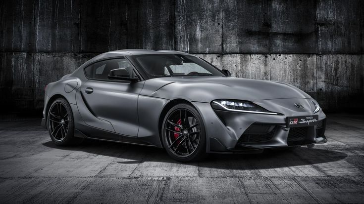
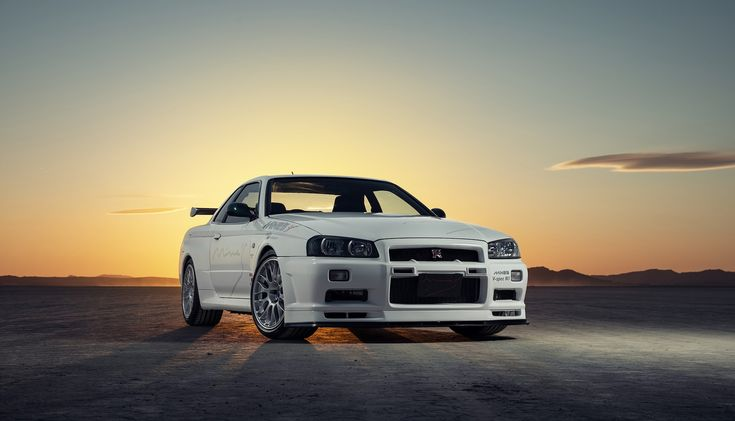
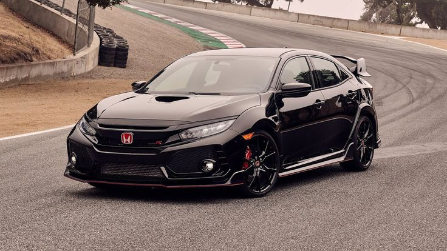
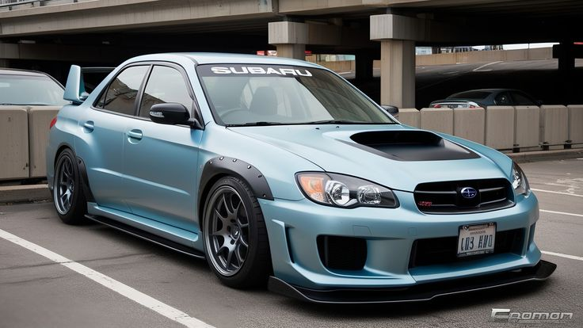
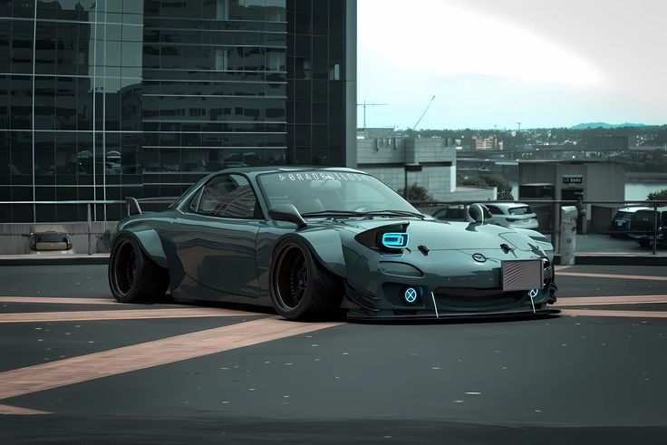

History of Japanese Cars
The Japanese automotive industry rose to global dominance after World War II By the 1970s and 1980s, Japanese manufacturers became known for producing fuel-efficient, affordable, and highly reliable vehicles
Today Japan leads in hybrid technology perfomance tunning culture and advanced engineering. Brands like Toyota, Nissan, Honda and Subaru have become household names worldwide, known for their innovation and quality.
Notable Japanese Car Brands
- Toyota
- Nissan
- Honda
- Subaru
- Mazda

Toyota
Toyota is the largest car manufacture in Japan and one of the biggest in the world. It's known for reliability, innovation, and hybrid technology.
What Toyota is Known For
- Hybrid technology(Prius)
- Durability and Reliability
- Wide Range of Vehicles
Popular Models
- Toyota Supra
- ToyotaCorolla
- Toyota Land Cruiser

Nissan
Nissan is known for innovation and performance. It has produced legendary sports cars and practical everyday vehicles. The Nissan GT-R is a legendary sports car, while the Nissan Leaf is a popular electric vehicle.
What Nissan is Known For
- Performance cars(GT-R)
- Electric Vehicles(Leaf)
- Innovative design
Popular Models
- Nissan GT-R
- Nissan Leaf
- Nissan Skyline

Honda
Honda is famous for engineering excellence in both cars and motorcycles. The brand is knoown for fuel efficiency and high reviving engines
Known For
- VTEC engine Technology
- Fuel efficient cars
- Reliable engineering
Popular Models
- Honda Civic
- Honda Accord
- Honda CR-V

Subaru
Subaru is known for its all-wheel-drive system and rugged vehicles. The brand has a strong following among outdoor enthusiasts and those who value safety and performance in adverse conditions.
What Subaru is Known For
- All-Wheel Drive (AWD)
- Rugged and Practical Vehicles
- Strong Safety Features
Popular Models
- Subaru Outback
- Subaru Forester
- Subaru WRX

Mazda
Mazda combines sporty performance with elegant design. it is well known for its rotary engine and "Zoom-Zoom" driving philosophy, which emphasizes fun and engaging driving experiences.
What Mazda is Known For
- Rotary Engine Technology
- Lightweight sports cars
- Driver focused experience
Popular Models
- Mazda MX-5 Miata
- Mazda CX-5
- Mazda3